職と技Jobs and skills
6 つの職。職ごとに大きな技の木（型 3 つ・節 60 あまり）があり、使う技は 4 本まで、基礎も木の節で上がります。職は町の職の間で替えます。Six jobs, each with a large ability tree (three archetypes, 60-odd nodes). Up to four active skills; stats also come from nodes. Change jobs at a town's job hall.
成長の仕組みHow you grow
レベルは一人に一つ。1 レベルにつき技の点が 1 つ。技の点は職ごとに別に持つので、職を替えても前の職の木はそのままです。You have one level. Each level grants one skill point. Points are kept per job, so changing jobs never touches the other trees.
4 つの基礎Four stats
筋力・敏捷・精神・耐久は、技の木の「基礎の節」（1 節 +4）で上がります。記録の画面（J）は見るだけ。レア以上の武器には基礎の要求値があり、届かないと攻撃力が半分になります。Strength, Agility, Spirit and Vitality come from stat nodes in the tree (+4 each). The record screen (J) is read-only. Rare and better weapons require a stat; below it your attack is halved.
技の点Skill points
技の画面（K）の木で節を取ります。使う技 2 点（幹の根は 1）、段・基礎・閾値 1 点、常に効く技 2 点、型の要 3 点。線でつながった節から順に。Take nodes in the tree on the skill screen (K): actives 2 points (the root 1), ranks, stats and thresholds 1, passives 2, keystones 3. Nodes open along the lines.
| レベルLevel | 1 | 5 | 10 | 15 | 21 | 27 | 33 | 40 | 50 |
|---|---|---|---|---|---|---|---|---|---|
| 技の点（職ごと）Skill points (per job) | 1 | 5 | 10 | 15 | 21 | 27 | 33 | 40 | 50 |
1 本の木は 75〜90 点。Lv 50 でも 50 点なので、全部は取れません。型をひとつ深く伸ばすか、二つを浅く混ぜるかがビルドです。A tree holds 75-90 points and you have 50 at Lv 50, so you cannot take it all. Go deep into one archetype or mix two shallowly.
六つの職Six jobs
職は、都と四つの町の訓練場にいる師範の「職の間」で替えます。木の取り方と型の保存は職ごとに残ります。Change jobs at the job hall of the training master in the capital and the four towns. Each job keeps its own tree and loadouts.
- 最初の職は、はじまりの島の宿り木の祠で選びます。六つの得物から一つ手に取ると、その職の始めの武器と最初の技がもらえます。You pick your first job at the island shrine: take one of six weapons and receive that job's starting weapon and first skill.
- ほかの職の武器は、町の店・頼み・敵の落とし物で手に入ります。どの章にも六つの職の武器があります。Other jobs' weapons come from shops, requests and enemy drops. Every chapter has weapons for all six jobs.
- 今の職の武器を持っていない間は、技が使えず、ほかの職の武器なら近接の攻撃力も半分です。技の帯は薄く残ります。Without your job's weapon you cannot use skills, and another job's weapon halves your melee damage. The skill bar stays dimmed.
- 初めての職に替えたときは、その職の始めの武器を一度だけ受け取れます。持ち替えだけでは職は替わりません。The first time you change to a job you receive its starter weapon once. Swapping weapons alone never changes the job.
| 職（世界の呼び名）Job (world name) | 職の武器Job weapons | 役目Role |
|---|---|---|
| 戦士（岩守り）Warrior (Rockwarden) | 剣・大剣・鉾・槍・盾Sword, greatsword, glaive, spear, shield | 剣と盾で前に立つ。敵の狙いを引く壁Stands in front with sword and shield. The wall that draws the enemy |
| 鍛冶師（灰の鍛え人）Smith (Ashsmith) | 鎚・斧Hammer, axe | 鎚と斧に火を宿す、重い一撃Heavy blows with fire in hammer and axe |
| 魔法使い（星読み）Mage (Stargazer) | 杖Staff | 杖で雷と火を放つ、遠い魔法の攻めCasts lightning and fire from afar with a staff |
| 弓使い（骨の射手）Archer (Boneshooter) | 弓・クロスボウBow, crossbow | 遠くから射抜き、罠で縛るShoots from afar and binds with traps |
| 暗殺者（風読み）Assassin (Windreader) | 短剣・牙・爪Dagger, fang, claw | 短剣で背後を突く、速い攻めFast strikes from behind with daggers |
| 呪術師（潮歌い）Shaman (Tidesinger) | 鈴・祭具Bell, ritual tools | 唄で守り、呪いで弱らせる支えShields with songs and weakens with curses |
職の木Job trees
幹（上）から左・中・右の三つの型へ分かれます。線は前提（どれか一つ取っていればよい）。使う技は木に 5〜7 本ありますが、取れるのは 4 本まで。型の要は、その型に 20 点使うと開きます。節に触れると中身が出ます。The trunk at the top splits into three archetypes (left, centre, right). Lines are prerequisites (any one is enough). A tree offers five to seven active skills but you may take only four. Keystones open at 20 points in their archetype. Hover a node for details.
- 使う技（4 本まで取れる）Active (take up to four)
- 常に効く技・段・刻印・基礎・閾値Passives, ranks, runes, stats, thresholds
- 型の要・変異（型の点 20 で開く／素材で開く）Keystones and mutations (20 archetype points / materials)
戦士（岩守り）Warrior (Rockwarden)
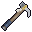
鍛冶師（灰の鍛え人）Smith (Ashsmith)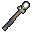
魔法使い（星読み）Mage (Stargazer)弓使い（骨の射手）Archer (Boneshooter)
暗殺者（風読み）Assassin (Windreader)
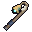
呪術師（潮歌い）Shaman (Tidesinger)技の一覧Skill lists
戦士の技Warrior skills
巨神斬りTitan Cleave使うActive岩属性Rock tree
前方の扇を斬る。大きな相手に強いCone slash ahead; hits big foes harder.
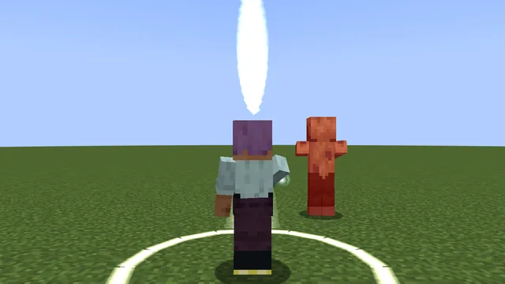
返し刃RiposteパッシブPassive岩属性Rock tree
傷を受けた直後の近接が強くなるYour next melee hit after taking damage is stronger.
パッシブなので、画面に出る見た目はありません。This skill is always on, so there is no on-screen visual.
岩呼びRock Call使うActive岩属性Rock tree
周りの敵の狙いを自分へ引くPull nearby enemies' aggro onto you.
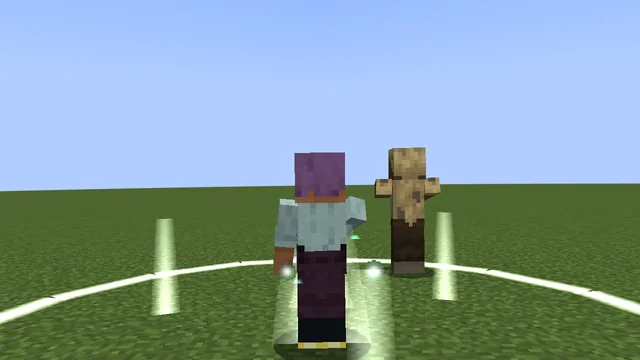
岩の構えStone StanceパッシブPassive岩属性Rock tree
防具と押されにくさが上がるMore armor and knockback resistance.
パッシブなので、画面に出る見た目はありません。This skill is always on, so there is no on-screen visual.
鯨尾薙ぎWhale-Tail Sweep使うActive岩属性Rock tree
周りを薙ぎ払い、軽く押し出すA sweeping blow around you with a light shove.
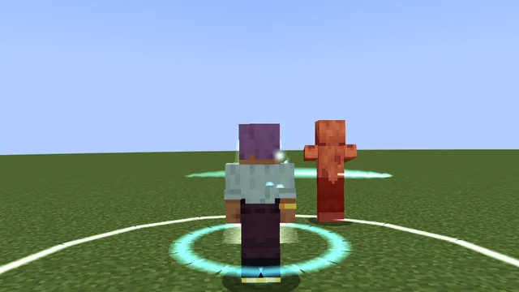
守り石の約束Oath of the Warding Stone要Keystone岩属性Rock tree
近くの仲間が受ける傷の一部を自分が受けるTake a share of nearby allies' damage.
パッシブなので、画面に出る見た目はありません。This skill is always on, so there is no on-screen visual.
盾の踏み込みShield Rush使うActive岩属性Rock tree
見ている敵の手前まで一気に詰めて打つ。地に足が着いているときだけRush to the foe you look at and strike; only while on the ground.
見た目は撮影を待っています。The in-game look is waiting for its shots.
盾殴りShield Bash使うActive岩属性Rock tree
前の敵を盾で突いて押し出し、足を鈍らせるRam foes ahead with the shield; pushes and slows.
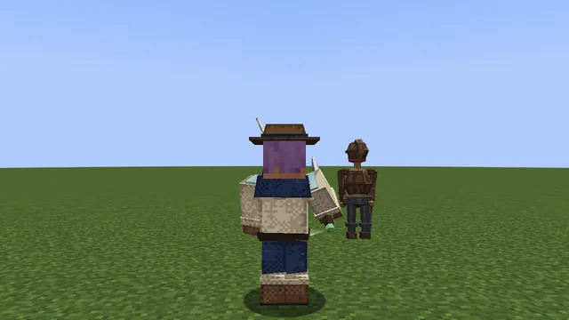
鯨骨の振りWhalebone Swing使うActive岩属性Rock tree
見ている 1 体に重い一撃。大きな相手に強いOne heavy blow on the foe you look at; strong against large foes.
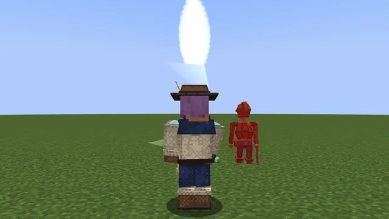
回し斬りSpinning Cut使うActive岩属性Rock tree
まわりを薙ぎながら前へ進むSweep around you while dashing forward.
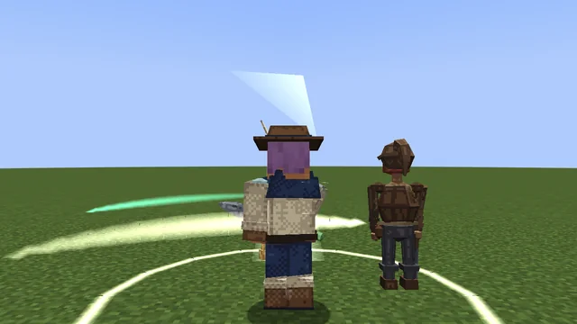
鍛冶師の技Smith skills
焼き入れTempering使うActive灰属性Ash tree
手の武器を熾にして炎を乗せるSet your weapon aglow with extra fire damage.
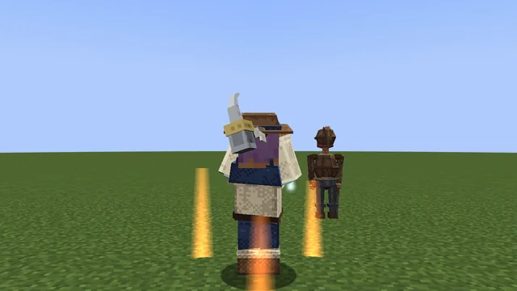
熾の心得Ember HeartパッシブPassive灰属性Ash tree
火の傷が減り、熾火に乗っても燃えないLess fire damage; ember ground cannot burn you.
パッシブなので、画面に出る見た目はありません。This skill is always on, so there is no on-screen visual.
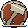
熾火の槌Ember Hammer使うActive灰属性Ash tree
叩きつけて地に熾火を残すSlam the ground and leave burning embers.
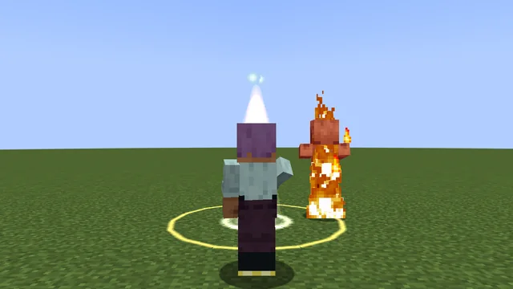
炉の記憶Forge MemoryパッシブPassive灰属性Ash tree
技を使うほど、次の近接が強くなるEach skill use charges your next melee hit.
パッシブなので、画面に出る見た目はありません。This skill is always on, so there is no on-screen visual.
灰散らしAsh Scatter使うActive灰属性Ash tree
周りの敵に灰をかぶせて弱らせるCover nearby foes in ash to weaken them.
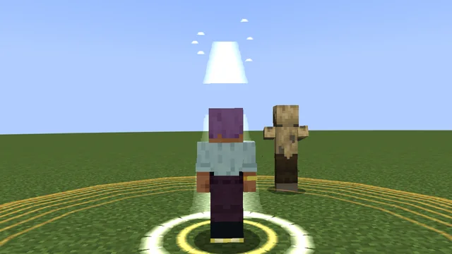
鍛え人の目Smith's Eye要Keystone灰属性Ash tree
武器の強化段階が、技の傷に響くYour weapon's enhancement level boosts skill damage.
パッシブなので、画面に出る見た目はありません。This skill is always on, so there is no on-screen visual.
炉の踏みForge Stomp使うActive灰属性Ash tree
足もとを踏み鳴らし、まわりに火の波。小さな敵は浮くStomp and send out a wave of fire; small foes are lifted.
見た目は撮影を待っています。The in-game look is waiting for its shots.
火花散らしSpark Burst使うActive灰属性Ash tree
まわりの敵に傷と炎Damage and burn foes around you.
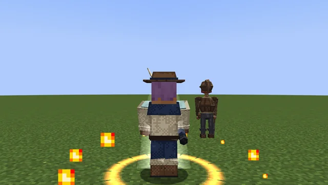
魔法使いの技Mage skills
雷の矢Thunder Bolt使うActive星属性Star tree
見ている向きへ稲妻を放つ。極めると近くの敵へ跳ねるCast a bolt of lightning ahead; at max rank it chains to a nearby foe.
見た目は撮影を待っています。The in-game look is waiting for its shots.
星読みの心得Star ReadingパッシブPassive星属性Star tree
杖を持っている間、マナの戻りが速いMana returns faster while you hold a staff.
パッシブなので、画面に出る見た目はありません。This skill is always on, so there is no on-screen visual.
熾火の玉Ember Orb使うActive星属性Star tree
ゆっくり飛ぶ火の玉。当たると弾けて燃やすA slow fireball that bursts and burns where it lands.
見た目は撮影を待っています。The in-game look is waiting for its shots.
凍て潮Frost Tide使うActive星属性Star tree
自分のまわりに冷たい潮。敵を傷つけて鈍らせるA cold tide around you that hurts and slows foes.
見た目は撮影を待っています。The in-game look is waiting for its shots.
転移Blink使うActive星属性Star tree
見ている向きへ跳ぶ。落ちた高さは消えるTeleport ahead; fall height is cleared.
見た目は撮影を待っています。The in-game look is waiting for its shots.
星の誓いStar Oath要Keystone星属性Star tree
星読みの技の傷が上がる。そのかわりマナを多く使うStargazer skills hit harder but cost more mana.
パッシブなので、画面に出る見た目はありません。This skill is always on, so there is no on-screen visual.
星屑Stardust使うActive星属性Star tree
まわりの敵に魔法の傷を降らせるRain spell damage on foes around you.
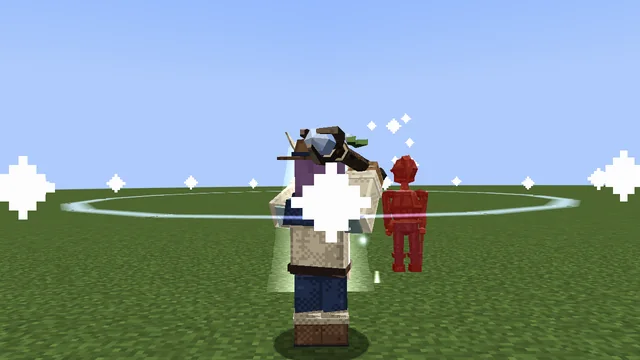
弓使いの技Archer skills
雲穿ちCloud Piercer使うActive骨属性Bone tree
まっすぐ貫く矢A piercing arrow in a straight line.
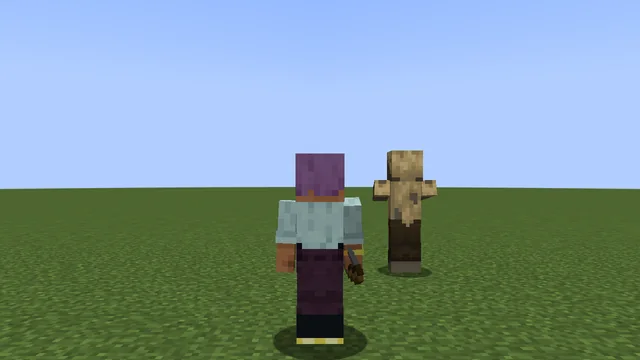
遠矢の心得Far ShotパッシブPassive骨属性Bone tree
距離が離れるほど飛び道具が強いRanged damage grows with distance.
パッシブなので、画面に出る見た目はありません。This skill is always on, so there is no on-screen visual.
骨の罠Bone Trap使うActive骨属性Bone tree
足もとに罠を置き、踏んだ敵を縛るSet traps that bind whoever steps on them.
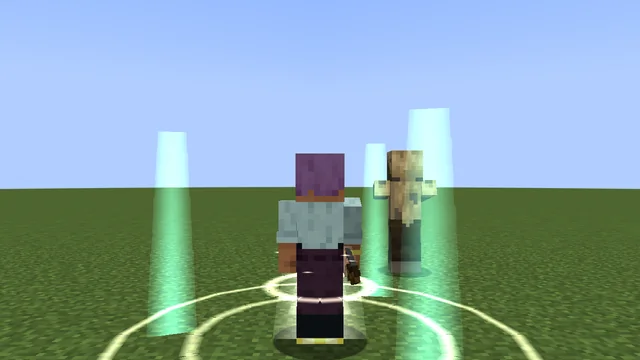
鷹の目Hawk EyeパッシブPassive骨属性Bone tree
当てた敵に印を付け、皆の攻撃が強くなるMark foes you hit so everyone deals more to them.
パッシブなので、画面に出る見た目はありません。This skill is always on, so there is no on-screen visual.
天の驟雨Rain from the Sky使うActive骨属性Bone tree
狙った所へ光の矢を降らせるRain light arrows onto the aimed spot.
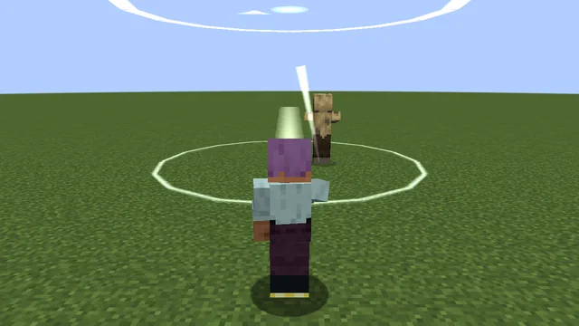
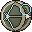
静かな弦Still String要Keystone骨属性Bone tree
動かずに引いた矢が強くなるArrows drawn while standing still hit harder.
パッシブなので、画面に出る見た目はありません。This skill is always on, so there is no on-screen visual.
射手の跳び退きArcher's Leap使うActive骨属性Bone tree
近くに敵がいるとき、後ろへ軽く跳ぶA light hop backward while a foe is close.
見た目は撮影を待っています。The in-game look is waiting for its shots.
足止めの矢Snare Shot使うActive骨属性Bone tree
見ている 1 体に矢の傷と鈍足Arrow damage and a slow on the foe you look at.
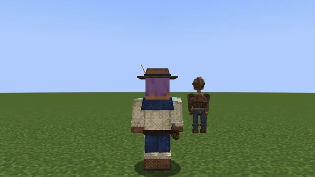
暗殺者の技Assassin skills
踏み込みLunge使うActive風属性Wind tree
見ている敵の手前まで詰めて斬るDash to the foe you look at and cut.
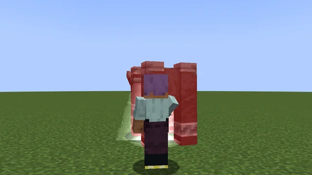
軽業NimbleパッシブPassive風属性Wind tree
移動が少し速く、落下の傷が減るSlightly faster on foot; less fall damage.
パッシブなので、画面に出る見た目はありません。This skill is always on, so there is no on-screen visual.
跳び退きBackstep使うActive風属性Wind tree
後ろへ素早く下がるHop back about four blocks.
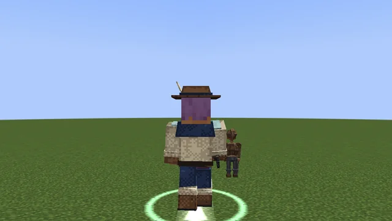
見切りForesightパッシブPassive風属性Wind tree
予告をかわした直後、攻撃が速くなるAttack faster right after dodging a floor telegraph.
パッシブなので、画面に出る見た目はありません。This skill is always on, so there is no on-screen visual.
風裂きWind Rend使うActive風属性Wind tree
素早い二連。背後から当てると強いQuick double strike; stronger from behind.
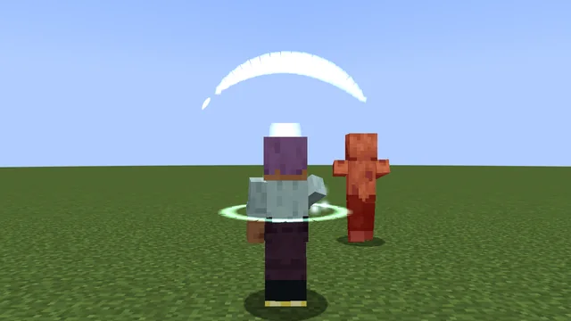
孤風Lone Wind要Keystone風属性Wind tree
近くに他の人がいない間、攻撃と移動が上がるStronger attack and speed while no one is nearby.
パッシブなので、画面に出る見た目はありません。This skill is always on, so there is no on-screen visual.
霧隠れMist Veil使うActive風属性Wind tree
しばらく姿を消して速くなる。消えている間の最初の一撃が強いVanish for a while and move faster; the first strike out of hiding hits hard.
見た目は撮影を待っています。The in-game look is waiting for its shots.
二連牙Twin Fangs使うActive風属性Wind tree
見ている敵に二度刺す。背後から強いTwo quick stabs; stronger from behind.
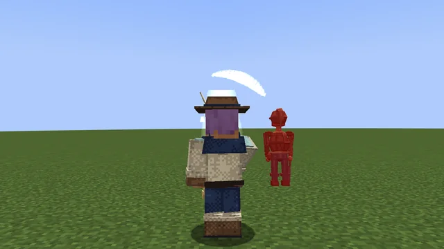
呪術師の技Shaman skills
守りの唄Ward Song使うActive潮属性Tide tree
仲間に短い吸収ハートを与えるGives allies a short absorption shield.
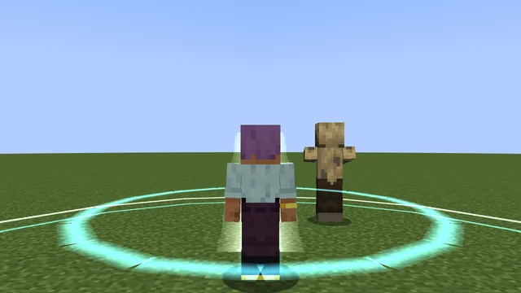
凪の心得Calm HeartパッシブPassive潮属性Tide tree
自分と仲間のマナの回復が上がるFaster mana recovery for you and allies.
パッシブなので、画面に出る見た目はありません。This skill is always on, so there is no on-screen visual.
引き潮Ebb Tide使うActive潮属性Tide tree
前方の敵を足もとへ引き寄せて鈍らせるPull foes ahead to your feet and slow them.
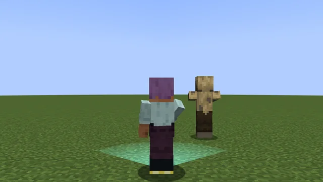
波紋RippleパッシブPassive潮属性Tide tree
技を当てた敵の動きを鈍らせるEnemies your skills hit move slower.
パッシブなので、画面に出る見た目はありません。This skill is always on, so there is no on-screen visual.
巡りの唄Cycle Song使うActive潮属性Tide tree
仲間のマナの回復を、しばらく大きく上げるGreatly boosts allies' mana recovery for a while.
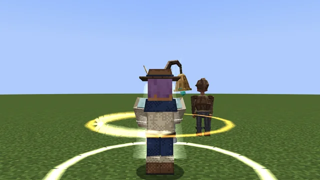
共鳴の声Chorus Voice要Keystone潮属性Tide tree
近くの仲間が多いほど技が強くなるSkills grow stronger with more allies nearby.
パッシブなので、画面に出る見た目はありません。This skill is always on, so there is no on-screen visual.
呪いの印Curse Mark使うActive潮属性Tide tree
見ている敵に印を付ける。印の敵は誰の攻撃でも傷つきやすく、攻撃が弱るMark the foe you look at: it takes more from everyone and hits softer.
見た目は撮影を待っています。The in-game look is waiting for its shots.
灯の守り札Lamp Charm使うActive潮属性Tide tree
足もとに灯を置き、そばの自分と仲間の護りの体力を満たし続けるSet a lamp at your feet that keeps topping up nearby allies' absorption.
見た目は撮影を待っています。The in-game look is waiting for its shots.
刻印（技を変える節）Runes (skill-changing nodes)
使う技のうち 10 本には 3 つの刻印の節があり、技の形が変わります。同じ技の刻印は一つしか取れません。Ten active skills each have three rune nodes that reshape the skill. Only one rune per skill can be taken.
- 対象: 巨神斬り・鯨尾薙ぎ・岩呼び・踏み込み・跳び退き・風裂き・守りの唄・引き潮・熾火の槌・雲穿ちSkills: Titan Cleave, Whale-Tail Sweep, Rock Call, Lunge, Backstep, Wind Rend, Ward Song, Ebb Tide, Ember Hammer, Cloud Piercer
- 刻印は木の節なので、その技の節のすぐ先にあり、1〜2 点で取れます。Runes are tree nodes right after their skill, costing 1-2 points.
- 付け替えは振り直しで。変異（技の形を変える節）は型の奥にあり、極めた技に巨神の核 1 と欠片 3 を払って開きます。一度払えば振り直しても ただで取り直せます。Change runes by resetting. Mutations (shape-changing nodes) sit deep in a branch: pay 1 titan core and 3 shards for a mastered skill; once paid they are free to retake after a reset.
書き換えの武器（4 番目の刻印）Rewrite weapons (the fourth rune)
書き換えの武器は、1 つの技を別の形に書き換えます。その武器を主の手に持つあいだだけ選べて効きます。Rewrite weapons each change one skill. They can be chosen and work only while held in your main hand.
| 書き換えの武器Rewrite weapon | 書き換わる技Skill rewritten |
|---|---|
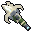 番兵長の鉾Captain's Glaive | 踏み込みLunge |
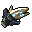 水路の顎牙Waterway Fang | 風裂きWind Rend |
| 潮招きの大鋏Tidecaller's Claw | 鯨尾薙ぎWhale-Tail Sweep |
| 珊瑚憑きの銛Coral Thrall's Harpoon | 引き潮Ebb Tide |
| 雷獣の爪Raiju Claw | 跳び退きBackstep |
| 羽守の鉤槍Warden's Hooked Glaive | 岩呼びRock Call |
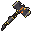 鍛え手の大鎚Ash Smith's Sledge | 熾火の槌Ember Hammer |
| 灰の番人の火掻きThrall's Poker | 焼き入れTempering |
このほかに、巨神ごとに職の武器のヒロイック（17 本）があり、それぞれ技の書き換えを一つ持ちます。心臓を止めるたびに一本ずつ低い確率で落ちます。Each titan also has heroic job weapons (17 in all), each carrying one skill rewrite. One may drop at a low chance every time a heart is stopped.
型の要（かなめ）Archetype keystones
型の奥。その型に 20 点使うと取れる、得と引き換えに癖のある常時の技（3 点）。職の要の技のほかに、硝子の刃・疾風の舞・満ち潮・灰の契り・独り弦・砦の 6 つの要があります。Deep in each archetype: an always-on skill with a trade-off (3 points) that opens at 20 archetype points. Besides the job keystones below there are six traits: Glass Blade, Wind Dance, Full Tide, Ash Pact, Lone String and Bulwark.
| 職Job | 要Keystone | 働きEffect |
|---|---|---|
| 戦士Warrior | 守り石の約束Oath of the Warding Stone | 8 ブロック以内の仲間が受ける傷の 10% を自分が受ける（1 回 1 ハートまで）Take 10% of damage dealt to allies within 8 blocks (max 1 heart at a time) |
| 鍛冶師Smith | 鍛え人の目Smith's Eye | 手の武器の強化段階 1 つにつき技の傷 +1.5%（+10 で +15%）+1.5% skill damage per weapon enhancement level (+15% at +10) |
| 魔法使いMage | 星の誓いStar Oath | 星読みの技の傷が上がる。そのかわり、星読みの技のマナが増えるStargazer skills hit harder, but cost more mana |
| 弓使いArcher | 静かな弦Still String | 3 秒動かずに引いた矢の威力 +25%。動くとやり直しArrows drawn after 3 s of standing still deal +25%; moving resets it |
| 暗殺者Assassin | 孤風Lone Wind | 16 ブロック以内に他のプレイヤーがいない間、攻撃力 +12%・移動 +6%。一人遊びの要While no other player is within 16 blocks: +12% attack, +6% speed. The solo keystone |
| 呪術師Shaman | 共鳴の声Chorus Voice | 8 ブロック以内の仲間 1 人につき（最大 5）、技の効果 +4%+4% skill effect per ally within 8 blocks (up to 5) |
武器の型Weapon types
武器の種類はどの職の武器かを決め、型は技との噛み合いです。合う型の武器を持つと、技に小さなおまけが付きます。縛りはありません。The weapon kind says which job it belongs to; the type describes synergy with skills. Holding a matching type gives a small bonus; nothing is ever required.
| 型Type | 武器Weapons | 技との噛み合い（縛りはなし）Synergy (never required) |
|---|---|---|
| 重Heavy | 鯨骨の大剣・余燼の戦斧・鍛え手の大鎚Whalebone Greatsword, Ember War Axe, Smith's Sledge | 巨神斬り・熾火の槌・焼き入れが強くなるBoosts Titan Cleave, Ember Hammer, Temper |
| 長Long | 番兵長の鉾・潮殻の三叉槍・珊瑚憑きの銛・羽守の鉤槍・灰被りの火掻きCaptain's Glaive, Tide Shell Trident, Coral Thrall's Harpoon, Warden's Hooked Glaive, Thrall's Poker | 踏み込み・引き潮の届き +1 ブロック、鯨尾薙ぎの半径 +0.5+1 block reach on Lunge and Ebb Tide, +0.5 radius on Whale-Tail Sweep |
| 速Fast | 水路の顎牙・雷獣の爪・潮招きの大鋏Waterway Fang, Raiju Claw, Tidecaller's Claw | 風裂きの倍率、見切りの持続などWind Rend multiplier, Foresight duration, and more |
| 遠Ranged | 弓Bows | 骨の射手の技の貫通・印・遠さPiercing, marking and range of Boneshooter skills |
| 守Guard | 珊瑚の盾Coral Shield | 岩呼びの持続、岩の構えの防具Rock Call duration, Stone Stance armor |
職の中の作り込みBuilding within a job
職の木は型ごとの道に分かれ、どの道を伸ばすかで同じ職でも遊び方が変わります。点の総数（Lv 50 で 45、職ごと）と「回復・無敵は作らない」は変わりません。Each job tree branches into paths; which path you grow changes how the same job plays. The total (45 points at Lv 50, per job) is unchanged, and there is still no healing or invulnerability skill.
| 仕掛けSystem | 決まりRule |
|---|---|
| 職の間Job hall | 職は都と町の訓練場の師範で替えます。木の取り方は職ごとに残り、初めての職には始めの武器が一度だけ付きます。Change jobs with the training master in the capital and towns. Each job keeps its tree; a first-time job comes with its starter weapon once. |
| 型の要（型の奥）Keystones | 職の木の型ごとに一つ、その型に 20 点使うと取れる、強い代わりに何かを失う常時の技（3 点）。One per archetype, opened at 20 archetype points: a lot of power for a trade-off (3 points). |
| 変異（型の奥の節）Mutations | 極めた技の枝の奥にある節。巨神の核 1 と欠片 3 を払って取ると、技の形が変わります（力・待ち・マナは同じ）。一度払えば振り直しても ただで取り直せます。A node deep in a mastered skill's branch. Pay 1 titan core and 3 shards to change the skill's shape (power, cooldown and mana unchanged). Once paid, retaking after a reset is free. |
| 熟練Mastery | 技を使う・当てる・予告をよけて当てるごとに育ち、1〜5 段。3 段で 4 つ目の「熟練の刻印」、5 段で足元に光の輪。転生しても残ります。Each skill grows by use, hits and dodge-hits, from 1 to 5. Mastery 3 opens a fourth "mastery rune"; mastery 5 adds a ring of light at your feet. Survives rebirth. |
| 試着Try-on | 画面だけの写しに技を仮に振り、効果・マナ・待ちを確かめてから確定できます。Preview points on a screen-only copy, check effect, mana and cooldown, then confirm. |
| 型の保存Loadouts | 職ごとに枠と刻印の組を 2 つ保存し、戦いの外でいつでも切り替えられます。Save two sets of slots and runes per job and switch outside combat. |
技の力の合計は +100% で頭打ちです。Total skill power is capped at +100%.
深いスキルDeep skills
極めた技と、転生した人のための深い仕掛けです。K 画面の「紋の盤」ページと、木のつまみの淵・前世の技から使います。どの職でも使えます。Systems for mastered skills and for reborn players, found on the Mutations and Glyphs page of the skill screen and on the tree selector. They work for every job.
| 仕掛けSystem | 決まりRule |
|---|---|
| 変異Mutations | 技の木の節。8 つの技に 1 つずつ。その技を極め、巨神の素材（核 1 と鱗・欠片 3）を持っていると選べます。技が形を変えます（例: 巨神斬り→断崖、風裂き→飛ぶ刃）。1 技に 1 つで、外せません。One per skill for eight skills. Master the skill and hold titan materials (1 core and 3 scales or fragments) to reshape it, for example Titan Cleave into Cliffbreak or Wind Rend into Flying Blade. One per skill, permanent. |
| 紋の盤Glyph board | 部屋を越えると紋（岩・風・潮・灰・骨、段 1〜3）が手に入ります。盤の穴は最初 3 つ、転生ごとに 1 つ開いて最大 6。穴ごとに中心の技を選ぶと、その技と隣の技が強まります。Clearing rooms yields glyphs of five kinds and tiers 1 to 3. The board starts with three holes and gains one per rebirth, up to six. Pick a centre skill per hole to strengthen it and its neighbours. |
| 前世の技Past-life skills | 転生 1 回につき別枠の 2 点（最大 12）で取る 6 つ（遺響の一撃・旧き見張り・墓鐘・記憶の刃・最期の光・魂の糸）。Six skills bought with a separate pool of 2 points per rebirth (up to 12): Echo Strike, Old Watch, Grave Bell, Memory Blade, Last Light and Soul Thread. |
| 淵の木The Abyss tree | 6 本目の木。転生した人にだけ見えます。引き・鏡・残響・貢ぎ・顎・誓いの 6 つ。他の木を混ぜるほど効く作りです。A sixth tree visible only to reborn players: Pull, Mirror, Echo, Tribute, Maw and Oath. It rewards mixing other trees. |
最強の組み立てでも、心臓や番兵長を倒す速さには下限があり、戦いが崩れないように調整してあります。Even the strongest build keeps a floor on how fast the hearts and the Captain can be beaten, so fights never collapse.
淵の木（転生 1・3・4・5 で開く。点は職の木と分け合う）The Deep tree (opens at rebirth 1, 3, 4, 5; shares points with the job tree)
前世の技（転生 1 回につき別枠の 2 点、最大 12）Past-life skills (a separate 2 points per rebirth, up to 12)
深淵術Abyss arts
深淵の層の溜まりで覚える三つの術です。淵の木と同じ「深淵術師」の木に並び、マナを使い、待ちがあります。段は 3 つまで。Three arts learned at the pools of the abyss layers. They sit in the Abyss Caster tree beside the Abyss tree, use mana and have cooldowns. Each has three ranks.
| 術Art | 鍵（既定）Key (default) | 覚える所Learned at | 働きEffect |
|---|---|---|---|
| 光の術Light | = | 骨の層の溜まりBone layer pool | 灯りを一つ置く。中の敵の輪郭が見え、使った人は暗がりでも見やすい。段で範囲と続く時間が伸びるPlaces a light. Foes inside show their outline, and the caster sees better in the dark. Higher ranks extend range and duration |
| 重さの術Weight | - | 塩の層の溜まりSalt layer pool | 上るときの重さを緩める。使った人だけ。段で緩みが大きく、続く時間が長くなるEases the weight of the climb, for the caster only. Higher ranks ease more and last longer |
| 鼓動の術Heartbeat | \ | 雷の層の溜まりStorm layer pool | 近くの敵の鼓動を聞き、その輪郭を一時見せる。近くの人（自分を含む）を癒すHears nearby foes and reveals their outline briefly. Heals allies nearby, including yourself |
段を上げるには、灰の溜まりで深淵術師の木を開き、そのそばで術の鍵をしゃがみながら押します。鍵は操作の設定で変えられます。To raise a rank, open the Abyss Caster tree at the ash pool, then crouch and press the art's key beside it. Keys can be rebound in the controls settings.
振り直しと型の保存Respec and loadouts
| できることAction | 決まりRule |
|---|---|
| 技の振り直しRespec skills | Lv 15 まではどこでも無料。そのあとは共鳴の炉のそばでいつでも共鳴の結晶 1Free anywhere until Lv 15. After that, near a Resonance Forge at any time for 1 resonance crystal |
| 戻るものWhat returns | 今の職の木の節がすべて戻り（技・段・刻印・型の要・基礎）、技の点は全部戻る。ほかの職の木、淵・前世の技、熟練、払った変異の素材には触らないEvery node of the current job's tree returns (skills, ranks, runes, keystones, stats) and all points are refunded. Other jobs' trees, deep and past-life skills, mastery and paid mutation materials are untouched |
| 刻印の付け替えSwap runes | 刻印は木の節なので、振り直して取り直すRunes are tree nodes: reset and take another |
| 型の保存Loadouts | 職ごとに木の取り方・枠・刻印の組を 2 つ保存でき、戦いの外でいつでも切り替えられる（点が足りなければ戻らない）Save two builds (tree, slots, runes) per job and switch outside combat; a build that no longer fits your points is refused |
装備の「木の印」の特性は、その職の技の力を伸ばします（武器にはその職の印だけが付きます）。The "tree mark" affixes on gear boost that job's skills (a weapon carries only its own job's mark). 装備のページへSee the gear page